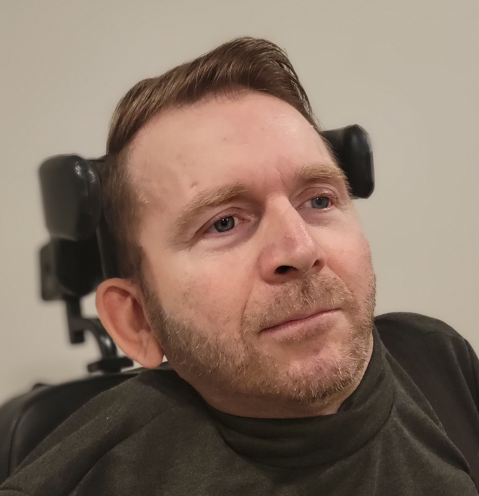

"Our mission is to help improve the quality of life for people
with disabilities and their caregivers. Our focus is on assistive
technology research, education, and public outreach"
- CEO, Jesse Leaman PhD
Our Team

Jesse Leaman
CEO/Founder
Jesse Leaman PhD is an award-winning research scientist and author, specializing in assistive technology for people with disabilities. He has been living with paralysis from the shoulders down for 30 years, ever since he had a traumatic spinal cord injury.
He was determined to make the most of his second chance at life, and he graduated with a B.S. in Astronomy from the University of Maryland, 6 years later. In 2008, he earned his Ph.D. in Astrophysics from the University of California, Berkeley. Dr Leaman worked for NASA for 12 years, first as a summer intern, then as a co-op student, and finally as a post-doctoral fellow. After that, he pivoted to computer science and engineering, in an effort to develop robotic wheelchairs. From 2016 to 2024 he collaborated with professors and students at the University of Nevada, Reno, the California State University, Sacramento, Clemson University, and Western Washington University. He has published several peer-reviewed scientific articles, an autobiography (Maximize Your Potential) and a science-fiction novella (Choose Your Future). Dr. Leaman founded the nonprofit Gryphon Foundation in 2019 to support people with disabilities and their caregivers. Dr. Leaman continues to conduct assistive technology R&D, and he enjoys giving entertaining/educational/inspirational public demonstrations of his aiChair.